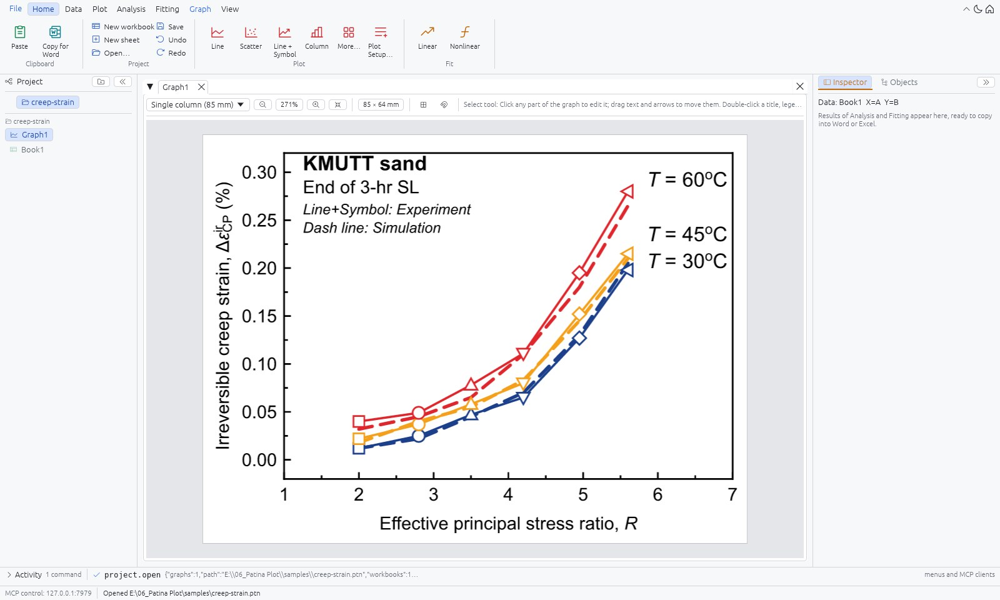
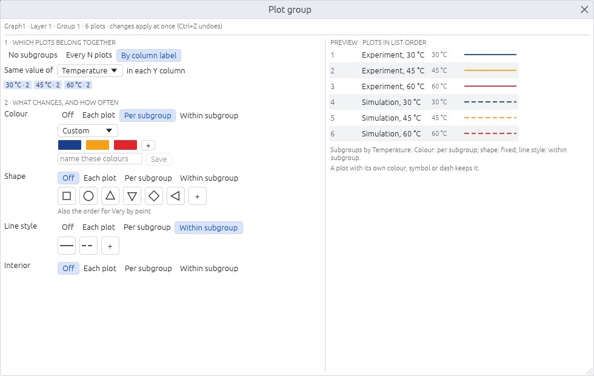
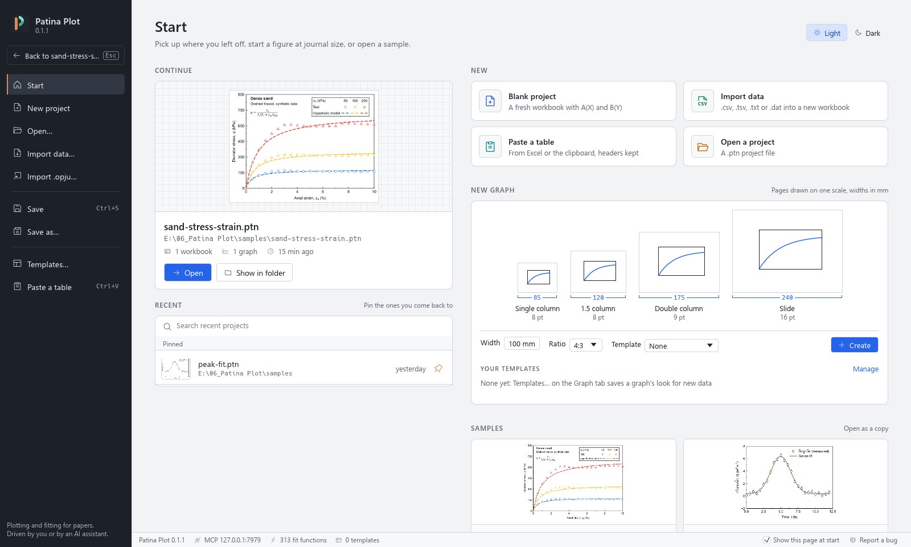
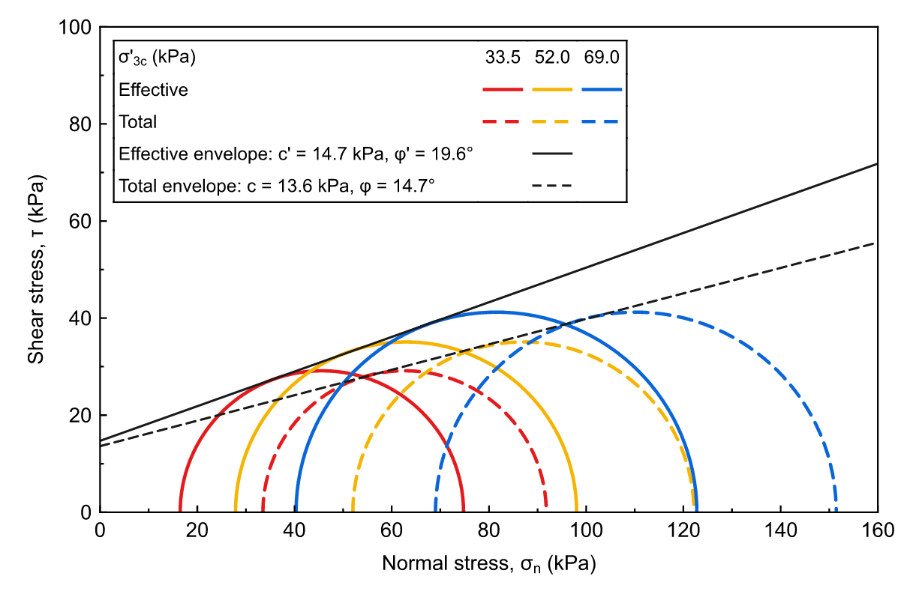
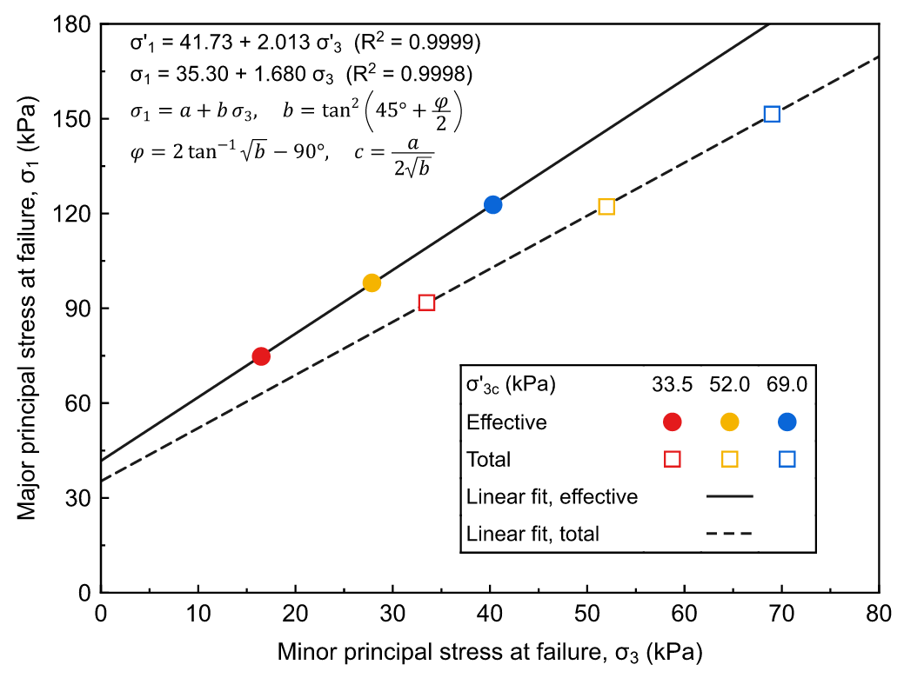
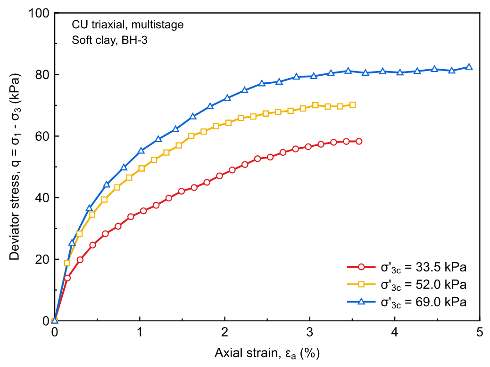
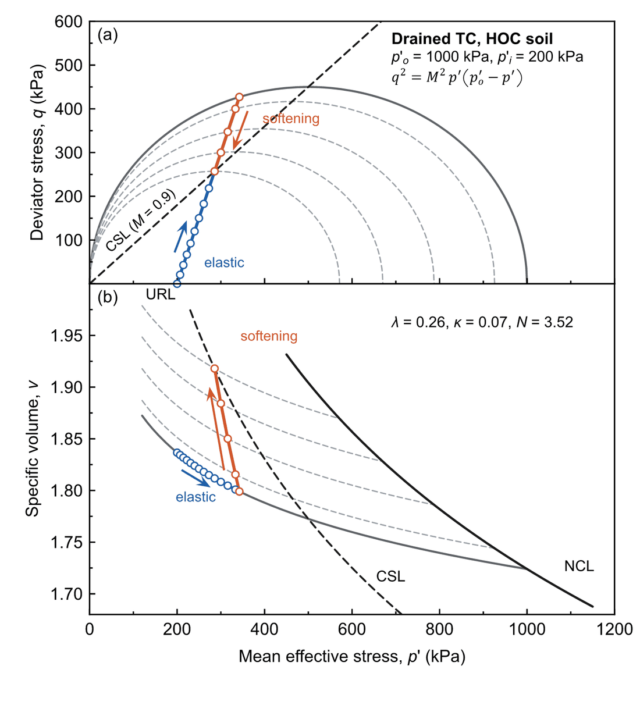
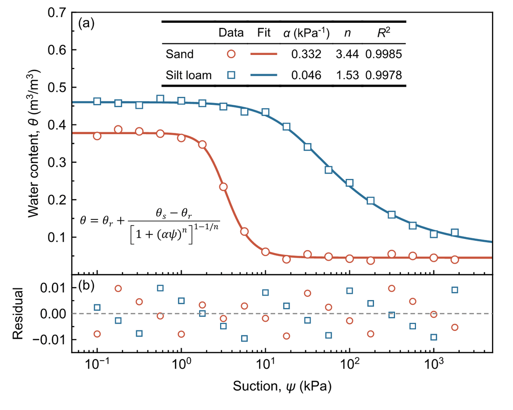
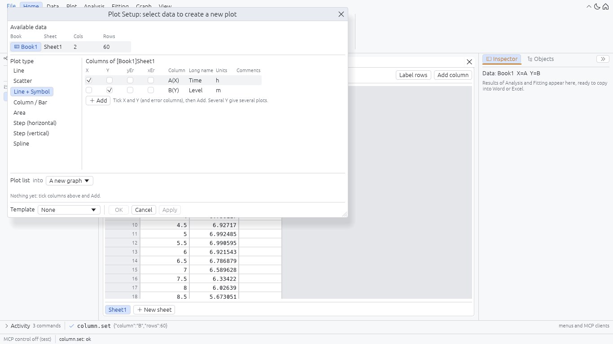

patina-plot · graphs and curve fitting · Windows · macOS
Plot it. Fit it. Paste it in the paper.
Worksheets, 2D plots, linear and nonlinear fits, integrals and smoothing, drawn as journal figures that paste into Word at their true width, still vector. Or hand the data to an AI assistant and watch it plot and fit through MCP.
y = y0 + A·(1 − e−x/t)R² = 0.998free for any use

Fit report · Patina Plot 0.1.2
all values exact
| Parameter | Value | Meaning |
|---|---|---|
| mcp_tools | 83 | Every command in the menus is also a tool an AI assistant can call |
| export_formats | 4 | EMF, PDF with fonts embedded, SVG, and PNG at 300 to 1200 dpi |
| journal_widths_mm | 85 · 120 · 175 | Single, 1.5 and double column at 4:3, or a page of your own |
| scale_in_word | 1 : 1 | Copy for Word pastes the graph at exactly its page size |
How it works
From a column of numbers to the figure in the paper.
One small program that starts in a moment, with every setting a journal figure needs and nothing it does not.
Data
Type into a worksheet as in Excel, paste a table, or import CSV. Columns have roles, units, formulas and filters.
Plot
Line, scatter, column, area and more, with error bars, plot groups, panels, insets and a right Y axis.
Fit
Your own formula or one of 30 built-in functions, starting values guessed for you, global fits across datasets.
Paper
Copy for Word at true size, still vector, or export EMF, PDF, SVG and PNG; fit tables paste into Word and Excel.
Plot groups: colour by confining pressure, line by test or model.
Group plots by a column label or every N plots, and choose what steps per group and what steps within it. Colour lists include Okabe-Ito, Science, Lancet and NEJM.

A Start page that picks up where you left off.
The last project with a thumbnail, pinned and recent projects, page sizes drawn to scale, your templates, the samples and the MCP setup for this computer.

Templates
Keep a graph's look without its data and plot new columns with it in one step.
Edit on the graph
Click any part to change it, drag texts and legends, align and distribute them, snap to a page grid.
Markup and Thai
m^3, k_{sat}, $\Delta T$, Greek typing, and Thai
set in its own font next to Arial.
Model Context Protocol
Say what the graph should show. Watch it appear.
patina-mcp exposes every command as a tool. The assistant works in your open window, renders the graph to check its own work, and Ctrl+Z undoes any step.
# register once: Claude Code on Windows claude mcp add patina-plot -- "%LOCALAPPDATA%\Programs\Patina Plot\patina-mcp.exe" --gui # on a Mac claude mcp add patina-plot -- "/Applications/Patina Plot.app/Contents/MacOS/patina-mcp" --gui
Put these water retention data into Book1, fit van Genuchten to both soils on a log suction axis and copy the graph for Word.
ok column_set Book1: suction and two soils ok fit_formula sand, R² = 0.9985 ok fit_formula silt loam, R² = 0.9978 ok graph_create Graph1, log X, residual panel ok graph_copy EMF + PNG on the clipboard

Gallery
Straight out of Patina Plot.
No retouching: these are the exported files.





Copy for Word
An EMF and a PNG on the clipboard; Word and PowerPoint paste the graph at exactly its page size. On a Mac, a vector PDF.
Export
EMF, PDF with fonts embedded, SVG, or PNG at 300 to 1200 dpi with its physical size recorded.
Fit tables
Parameters, standard errors and R² paste into Word or Excel with their rows and columns.
Download
Get Patina Plot.
Free for personal, academic and commercial work under the freeware licence; the graphs and data you make are yours. No administrator rights, nothing to sign up for.
Windows
PatinaPlot-Setup.exe- The app and
patina-mcp.exe, the MCP server for AI assistants - Start menu entry; .ptn projects open with a double-click
- Two sample projects, the licence and third-party notices
- No installer? The portable .zip: unzip and run
macOS
patina-plot-macos.zip- One
Patina Plot.appfor both kinds of Mac, withpatina-mcpinside - Unzip and move it to Applications; .ptn projects open with a double-click
- Copy for Word puts a vector PDF and a PNG on the pasteboard
Windows may show a SmartScreen warning the first time because the program is not code-signed: choose More info, then Run anyway.
The Mac app is not notarized yet, so macOS asks once before opening it: right-click it and choose Open, or on macOS 15 and later choose Open Anyway in System Settings > Privacy & Security.
Patina Plot checks this page once a day and offers new versions itself. All releases and notes →